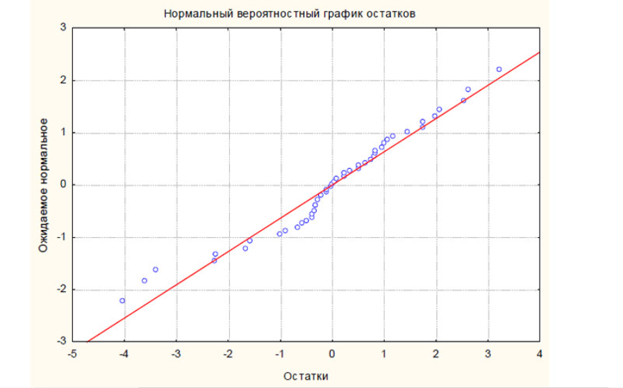

Множественная линейная регрессия является статистическим методом, используемым для прогнозирования значения зависимой переменной на основе нескольких независимых переменных.
Модель множественной линейной регрессии можно записать следующим образом:
y = b0 + b1*x1 + b2*x2 + ... + bn*xn
где:
- y - зависимая переменная
- x1, x2, ..., xn - независимые переменные
- b0, b1, b2, ..., bn - коэффициенты регрессии
Для определения коэффициентов регрессии используется метод наименьших квадратов (МНК).
Пример использования множественной линейной регрессии
Предположим, мы хотим спрогнозировать цену на недвижимость на основе нескольких факторов, таких как площадь квартиры, количество комнат и расстояние до центра города.
Для этого мы можем построить модель множественной линейной регрессии и использовать ее для прогнозирования цен на новые недвижимости.
Преимущества и недостатки
Преимущества
- Позволяет учитывать влияние нескольких факторов на зависимую переменную
- Может быть использован для прогнозирования будущих значений зависимой переменной
- Метод наименьших квадратов обеспечивает оптимальные коэффициенты регрессии
Недостатки
- Требует наличия достаточного количества данных для обучения модели
- Модель может быть переобучена или недообучена, что приведет к ошибкам прогнозирования
- Не учитывает возможные нелинейные зависимости между переменными
Оценка качества модели множественной линейной регрессии
